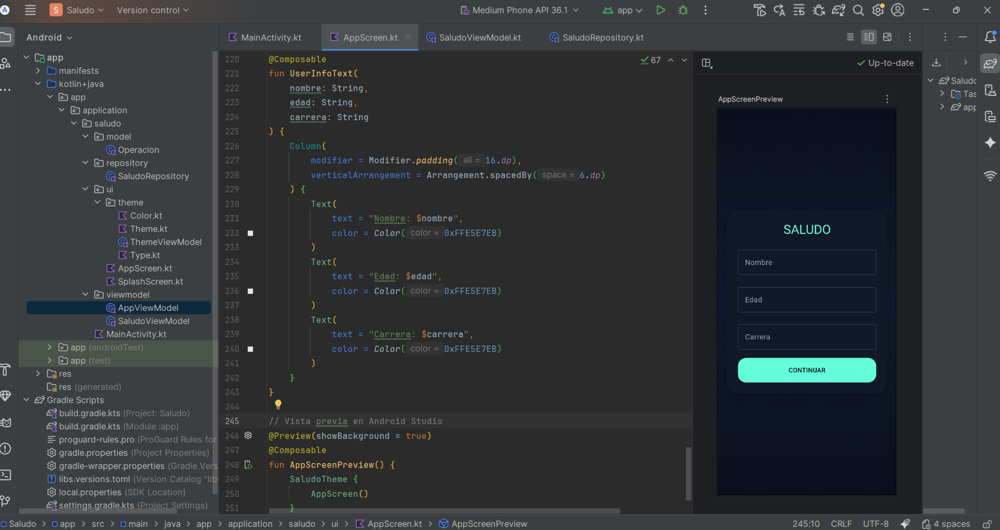

Expresiones, operadores y funciones
Una expresión es una combinación de valores, variables y operadores que se evalúa para producir un resultado. Las expresiones son la base de cualquier cálculo en programación, ya que permiten realizar operaciones, comparaciones y tomar decisiones.
5 + 3 x * 2 edad > 18
Ejemplo de resultados:
5 + 3 → 8 x * 2 → depende del valor de x edad > 18 → true o false
Los operadores permiten realizar operaciones entre valores o variables. Los principales tipos son:
Aritméticos + Suma - Resta * Multiplicación / División Relacionales > Mayor que < Menor que == Igual != Diferente
Ejemplo:
10 + 5 → 15 8 > 3 → true 5 == 5 → true
Una función es un bloque de código que realiza una tarea específica y puede reutilizarse varias veces. Las funciones reciben datos de entrada, los procesan y devuelven un resultado.
function nombreFuncion(parametros){
// instrucciones
return resultado;
}
Ejercicio 1: Sumar dos números
Paso 1: Se reciben dos valores.
Paso 2: Se realiza la suma.
Paso 3: Se devuelve el resultado.
function sumar(a, b) {
return a + b;
}
console.log(sumar(4, 6));
Resultado: 10
Ejercicio 2: Calcular el cuadrado de un número
Paso 1: Se recibe un número.
Paso 2: Se multiplica por sí mismo.
Paso 3: Se devuelve el valor.
function cuadrado(x) {
return x * x;
}
console.log(cuadrado(5));
Resultado: 25
Ejercicio 3: Determinar si un número es par
Paso 1: Se divide el número para 2.
Paso 2: Se evalúa el residuo.
Paso 3: Se devuelve true o false.
function esPar(n) {
return n % 2 === 0;
}
console.log(esPar(8));
console.log(esPar(7));
true false
Ejercicio 4: Restar dos números
Paso 1: Se reciben dos valores.
Paso 2: Se resta el segundo al primero.
Paso 3: Se devuelve el resultado.
function restar(a, b) {
return a - b;
}
console.log(restar(10, 3));
Resultado: 7
Ejercicio 5: Multiplicar dos números
Paso 1: Se reciben dos valores.
Paso 2: Se realiza la multiplicación.
Paso 3: Se devuelve el resultado.
function multiplicar(a, b) {
return a * b;
}
console.log(multiplicar(4, 5));
Resultado: 20
A continuación se muestra un ejemplo de un composable reutilizable en Jetpack Compose. Este componente permite mostrar el nombre, la edad y la carrera de un usuario, siguiendo buenas prácticas de reutilización de código.
@Composable
fun UserInfoText(
nombre: String,
edad: String,
carrera: String
) {
Column(
modifier = Modifier.padding(16.dp),
verticalArrangement = Arrangement.spacedBy(6.dp)
) {
Text(
text = "Nombre: $nombre",
color = Color(0xFFE5E7EB)
)
Text(
text = "Edad: $edad",
color = Color(0xFFE5E7EB)
)
Text(
text = "Carrera: $carrera",
color = Color(0xFFE5E7EB)
)
}
}
Este composable puede reutilizarse en diferentes pantallas de la aplicación, permitiendo mostrar información del usuario de forma clara y ordenada.
